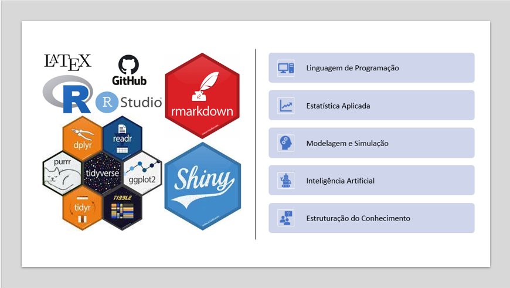

Programação em R para biotecnologistas (em elaboração)
5 de outubro de 2023
1 Apresentação
1.1 Quem somos?
1.2 Iniciativas
Projeto Ciência de Dados na Lagoa do Sino
Grupo de Ciência de Dados e Aplicações Tecnológicas
Linhas de Pesquisa:
+ Aprendizado de Máquinas
+ Modelagem Estatística em Ciências Ambientais e Ecologia
+ Vieses e Processos de Tomada de DecisõesProgramas de Iniciação Científica e Estágios
Estudos e Capacitações

1.3 Projetos de Pesquisa
|
Um pacote para a elaboração de relatórios ambientais automatizados sobre o uso e a ocupação do solo no Brasil. Fontana, KO; Souza, CA; Molin, PG; Santana, MF; Ferreira, IEP. Fomento: CNPq |
|
Plataforma de simulação baseada em multi-agentes (MBA) e o controle populaciona do Java Porco (Sus scrofa) no Sudoeste Paulista Bassani, FB; Sanches, A; Ferreira, IEP et al. |
|
Um sistema para a visualização e análise de dados socioambientais em recortes do terrotório brasileiro Bilia, G; Pantoja-Filho, JLR; Ferreira, IEP et al. |
|
Implementação computacional de módulos de processamento, análise e visualização de métricas de paisagens no programa Biomastats Camargo, V; Carvalho, HL; Tiezzi, RO; Ferreira, IEP et al. Fomento: CNPq |
|
Aplicação de modelos segmentados com transição de fase suave para explicar o Efeito de Ilhas Pequenas a partir da existência de limiares aleatórios Santana, MF; Zocchi, SS; Leandro, RA; Martensen, AC; Ferreira, IEP |
|
Desenvolvimento e implantação da Interface Gráfica do Usuário para o programa Biomastats via aplicativos shiny Santana, MF; Ferreira, IEP Fomento: CNPq |